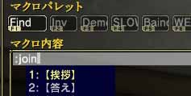
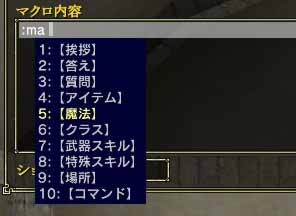
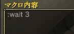
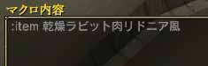
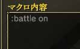
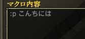

1.Com.
「Com.」とはそのコマンドだけを入力すれば動作するマクロです。「Com.」に当てはまるマクロは以下の通りです。
| 動作 |
マクロ |
| 直接攻撃する |
:attack |
| 遠隔攻撃する |
:range |
| 休憩状態 ON/OFF |
:healing |
| 戦闘状態 ON/OFF |
:battle |
| 防御 |
:defense |
| ログアウト |
:logout |
| パーティーに参加 |
:join |
| パーティーから脱退 |
:leave |
| パーティーを解散 |
:breakup |
ダイス
(サイコロを振る) |
:dice |
| 時間を表示 |
:time |
| マップ表示 |
:map |
| オートターゲット ON/OFF |
:autotarget |
| 名前表示 ON/OFF |
:showname |
注意しなければならないものは水色の枠のマクロです。「:attack」、「:range」は本来コマンドの次にターゲットを指定しなければなりません。上記のようにターゲットを省略した場合は、現在ターゲットが合っている対象に攻撃を仕掛けます。
「:battle」、「:map」、「:autotarget」は本来コマンドの次に「on」もしくは「off」を指定しなければなりません。上記のように省略した場合、トグル動作(on の状態ならばoff を指定し、off の状態ならばon を指定)となります。

(:join の使用例)
2.Com. + Sub.
「Com. + Sub.」とはコマンド(Com.)と対象(Sub.)を指定することで動作するマクロです。コマンド(Com.)と対象(Sub.)の間には半角スペースを入れなければなけません。「Com. + Sub.」に当てはまるマクロは以下の通りです。
| 動作 |
マクロ |
| 直接攻撃する |
:attack Sub. |
| 遠隔攻撃する |
:range Sub. |
| カーソルを合わせる |
:target Sub.
:ta Sub. |
| 調べる |
:check Sub.
:c Sub. |
| トレードを行う |
:trade Sub. |
| プレイヤー検索 |
:search Sub.
:sea Sub. |
| ホストゲーム検索 |
:gamelist Sub.
:gl Sub. (l はエル) |
| パーティーに誘う |
:invite Sub. |
| パーティーリーダー変更 |
:changeleader Sub.
:cl Sub. (l はエル) |
| パーティーから追い出す |
:kick Sub. |
| 自分のゲームに誘う |
:gameinvite Sub.
:gi Sub. |
なお、上の表で「Sub.」と表記した部分には、以下の記号を入力してください。ただし、水色の枠の「:attack」、「:range」のみ省略可能です。「Sub.」を省略した場合、すでにターゲットが合っているものが対象となります。
| 対象(Sub.) |
記号 |
| 自分自身 |
%m
%p1 |
| パーティーの2人目 |
%p2 |
| パーティーの3人目 |
%p3 |
| パーティーの4人目 |
%p4 |
| カーソルが合っているキャラクター |
%t |
| 一番近いNPC |
%n |
| 一番近い敵 |
%e |
| 一番近くにいる戦闘状態の敵 |
%be |
(ターゲットの合っているプレイヤーをパーティーに誘う)
3.Com. + n or Com. + Name
「Com. + n」、「Com. + Name」はコマンド(Com.)の後に整数もしくはアイテム・スキルなどの名称(Name)を入力することで動作するマクロです。コマンド(Com.)と整数(n)、アイテムなどの名称(Name)の間には半角スペースを入れなければなりません。これに当てはまるマクロは以下の通りです。
| 動作 |
マクロ |
ウェイト
(少し待つ) |
:wait n |
| アイテムを使う |
:item Name |
| 魔法を使う |
:magic Name
:ma Name |
| スキルを使う |
:skill Name |
| 感情表現 |
:emotion Name
:emo Name |
注意しなければならないのは、水色の枠のマクロです。これらのマクロは本来「Com. + Name + Sub.」の形を取っているため、Nameの後に対象を入力しなければなりません。そのため上記のように表記した場合、すでにカーソルを合わせているものが対象となります。ただし、感情表現だけは例外で対象を省略したときは、自分自身が対象となります。なお、Nameの指定はマクロ編集中にTabキーを押すことで選ぶことができます。

(Tabキーを押したとき)

(3秒間待つ)

(「乾燥ラビット肉リドニア風」を使う)
(HEAL-I をターゲットのあったプレイヤーに使う)
4.Com. + Msg or Com. + on/off
「Com. + Msg」、「Com. + on/off」はコマンドの後にメッセージ、もしくはon・offを指定することで動作するマクロです。コマンドとメッセージ、もしくはon・offの間には半角スペースを入れなければなりません。これらに当てはまるマクロは以下の通りです。
| 動作 |
マクロ |
| 戦闘状態 ON/OFF |
:battle on/off |
| マップ表示 ON/OFF |
:map on/off |
| オートターゲット ON/OFF |
:autotarget on/off |
| パーティーチャット |
:party Msg
:p Msg |
| ギルドチャット |
:guild Msg
:g Msg |
広範囲に聞こえるメッセージ
(シャウト、SHOUT) |
:shout Msg
:sh Msg |
周辺に聞こえるメッセージ
(Say) |
:say Msg
:s Msg |
| ホストメッセージ |
:hmes Msg
:hm Msg |
水色の枠の「on/off」をしているするマクロは、on/offを省略した場合、トグル動作(on の場合はoff を指定し、off の場合はon
を指定)となります。また「Com. + Msg」のマクロでメッセージ(Msg)を何も入力しなくても動作しますが、意味がないのでやめましょう。

(戦闘状態 ON)

(パーティーメンバーに「こんにちは」と言う) |